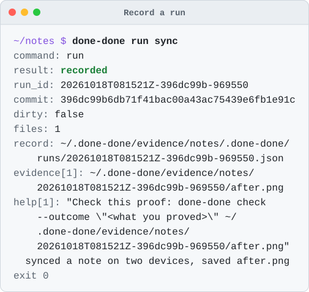
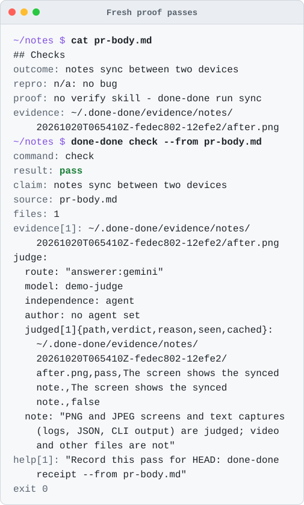
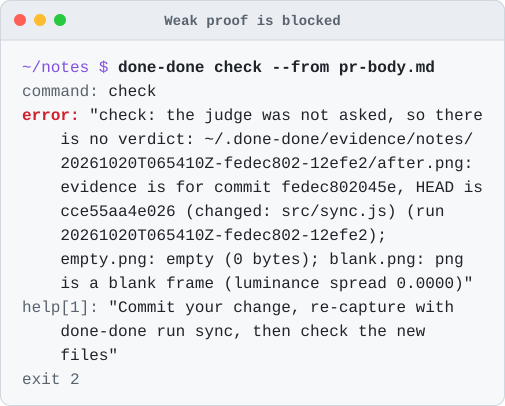

No proof, no “done”.
done-done won't accept “done” without real, fresh proof from your product, captured at the exact commit being called done.

Install in 3 steps
From npm, with Node 22.18 or newer and git.
Install
npm install -g done-done-axi
Puts done-done on your PATH.
Set up your repo
cd your-app && done-done init
Writes a minimal .done-done.yaml and asks which coding agent and which judge to use. It never picks either for you.
Check the setup
done-done doctor
Changes nothing and names each missing piece with the command that fixes it.
Then prove something: done-done verify --outcome "<what a user can now do>". Or give your agent the skill with npx skills add umeranjum17/done-done-axi --skill done-done -a <agent> -y and ask “is this really done?”
Why
“Done” is easy to say. Screenshots get reused, recordings go stale, and a green test run is not the app.
done-done runs your capture and ties every screenshot, recording and log it saves to the exact commit. When someone says “done”, it checks the proof they point to: is it really there, is it a real picture or video, is it from this commit, and is it new? If not, the check fails. If it can't tell, it says so instead of passing.
See it work
Four moments from a demo notes app. Every picture is real output from the current build; the demo's judge is a stub, so no model runs.




What it checks
- The real product, not code checks. Proof comes from driving the app the way a user does; a journey that only runs tests, typecheck or lint is refused.
- Tied to a commit. Every run records the commit, and whether there were uncommitted changes.
- Real media. Empty, cut-off, blank or tiny screenshots fail. Videos must hold real frames.
- Fresh, and not reused. Proof from an older commit fails, and so does proof reused for a different claim.
- Shows the outcome. A fresh, tools-off judge on your own plan or key says whether each capture is the right screen for the claim. There is no way to turn it off.
- Honest claims. A pull request's
## Checksblock must have every line filled in, andlintgates it with no model. - Verifiable later.
receiptrecords a passing check against the commit and the sha256 of every file it cited. - Looks right.
designandlookcatch squashed or clipped text, overlap and pages wider than the screen.
Every answer is an exit code: 0 pass, 1 fail, 2 usage or config error, 3 can't tell, 4 a run is still running or waits at its gate.
Alone, and with the other tools
done-done works on its own: the CLI and the skill need nothing else. It is one of four tools that each do one job and connect through small written contracts. Neither needs the others.
done-done
Verification. This page.
sign-off
The board where agents ask you questions. done-done signoff writes a run's gate or evidence in its format; it never posts.
learn-from-mistakes
Retros that find mistakes your agents keep repeating, with evidence.
first-draft
Turns a prompt into design mocks. Pass one to done-done design --mock to judge a screen next to it.
Inside Firstmate, or outside
done-done behaves the same with or without Firstmate. Nothing here is needed to use it.
Inside a Firstmate home, integrations/firstmate/ ships a brief include that tells each worker to run a journey, write a ## Checks block, pass check and record a receipt, and an optional merge gate that refuses a merge without it. A lone agent in a terminal skips all of that.